Overview of several enhancements I shipped directly to production—becoming the first designer at Personio to commit code.
Answers questions about headcount, retention, and team trends. + Agentic workflow.
Brought on as Principal Designer to elevate the experience to industry standards.
4 ML engineers, 1 FE engineer, 1 product designer.
Complex implementations were compromised or abandoned. Basic UX went unfixed while the team worked on higher-fidelity craft.
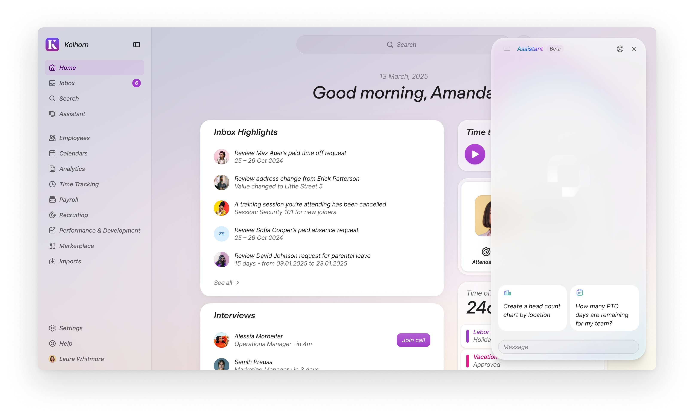
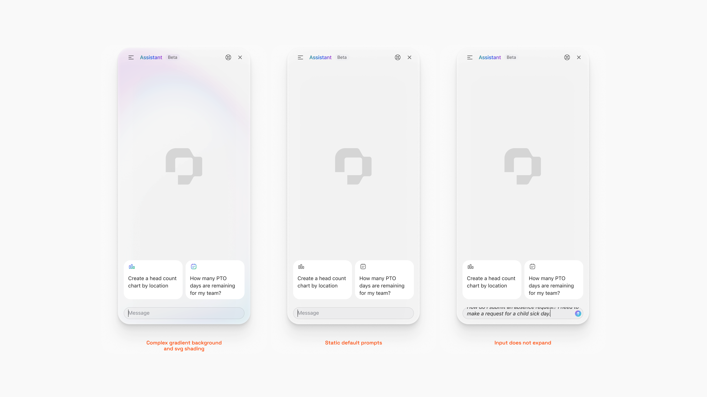
"AI driven design can help me close the gaps between design intent and production"
There were clear issues that could be improved upon.
Beautiful files didn't translate to production.
May help close the gap where static designs failed.
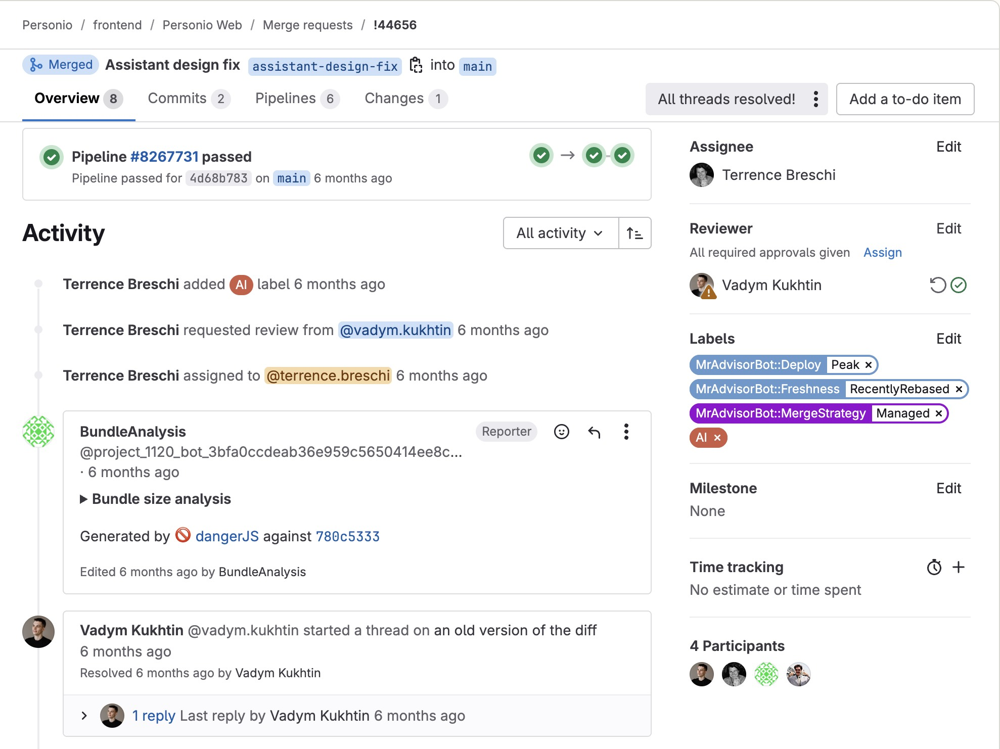
Saw a Slack post from the CEO frustrated with long text handling.
Confident I could fix it without major architectural changes.
A fix that would be noticed at the executive level.
High-impact, low-risk approach to prove the concept.
Problem: Static admin prompts didn't match what employees needed.
Solution: Employee-relevant starter prompts that demonstrate capabilities.
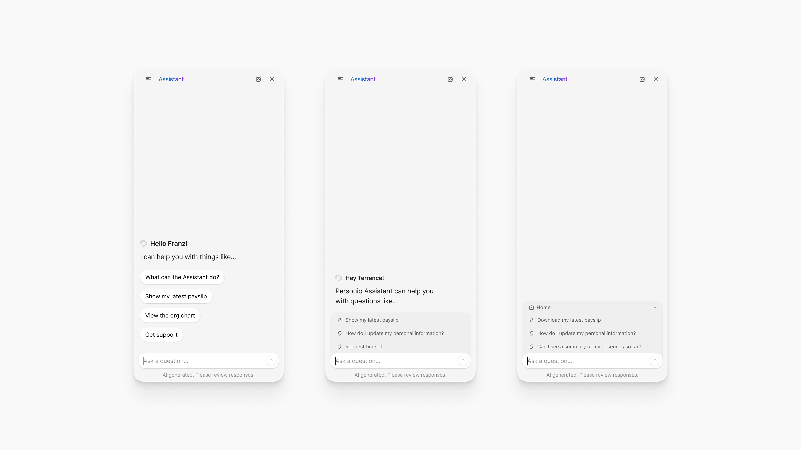
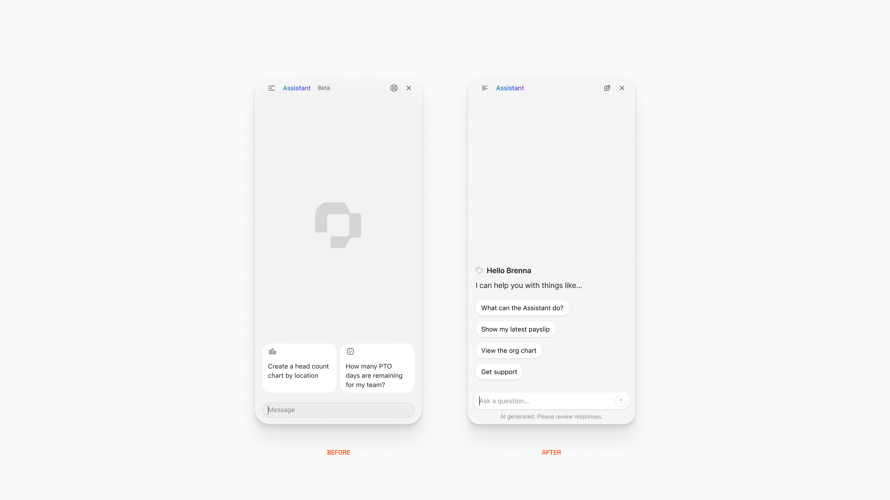
Problem: Single-line field truncated questions, hid text as users typed.
Solution: Flexible field that grows dynamically, ~4 lines visible before truncation.
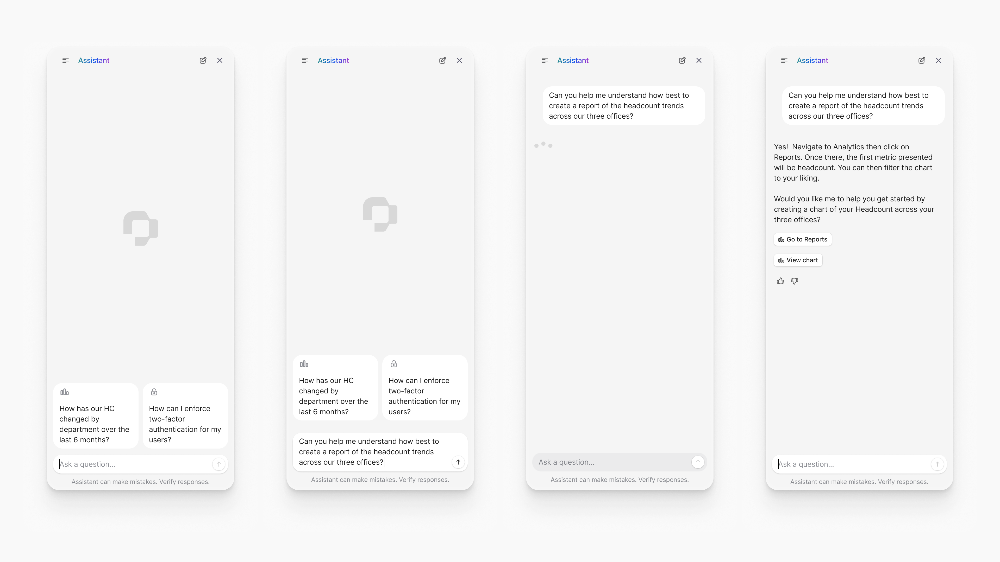
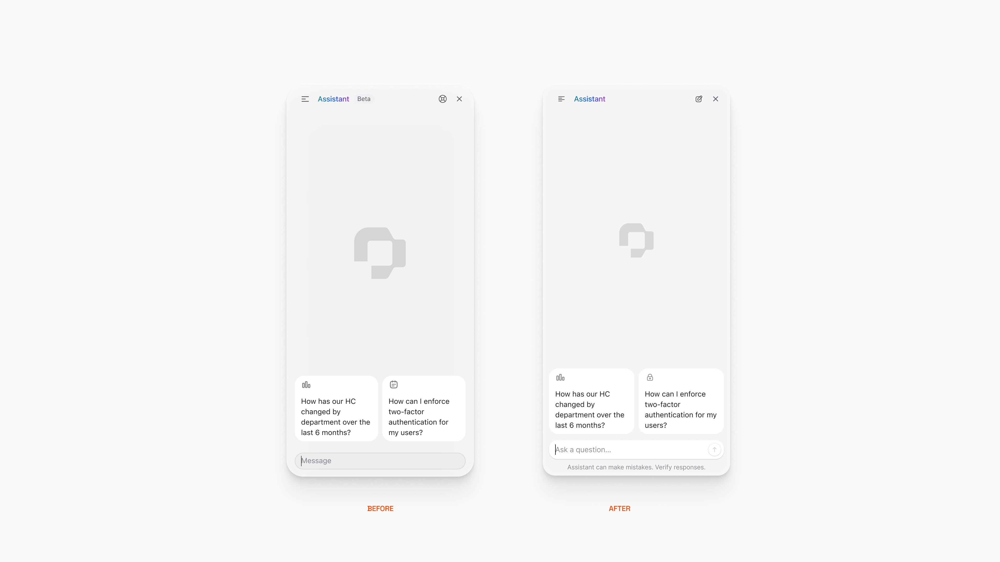
Problem: Responses streamed bottom-to-top.
Solution: Top-to-bottom streaming + scroll-to-bottom button for long responses.
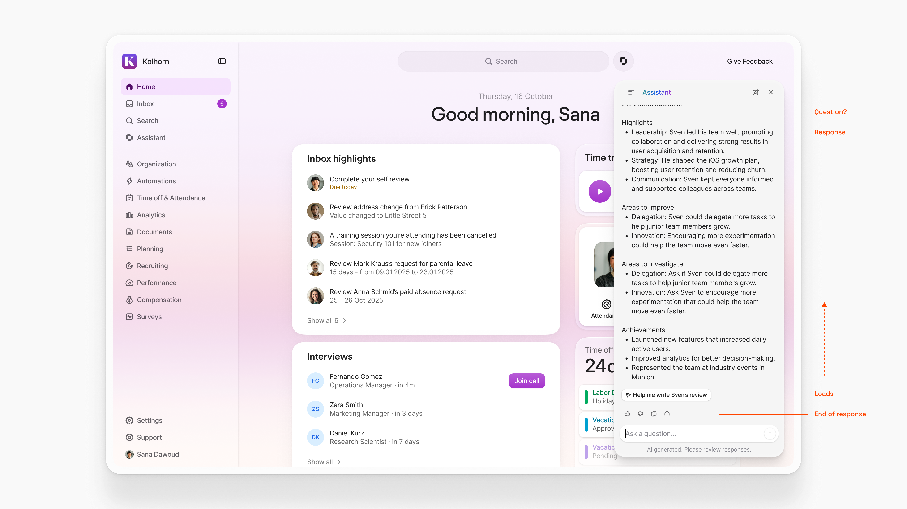
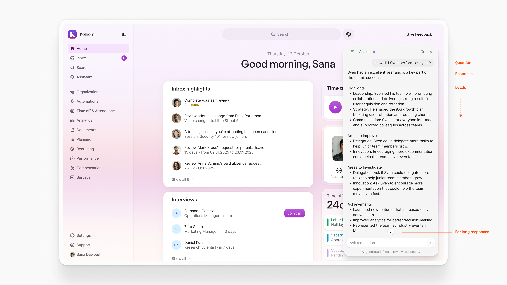
Problem: No way to verify where information came from.
Solution: Inline source citations so users can verify and build trust.
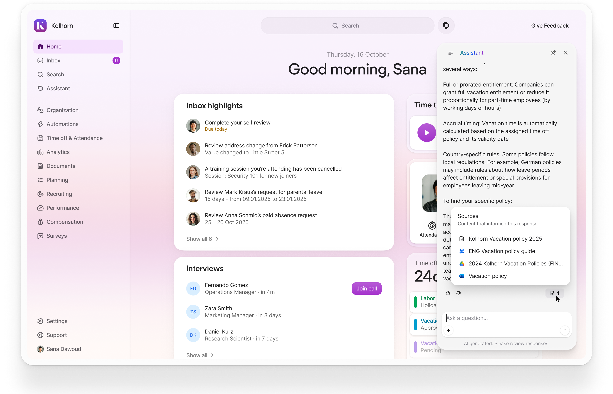
Problem: Forced to wait even when model was off track.
Solution: Visible stop button during streaming—users can interrupt anytime.
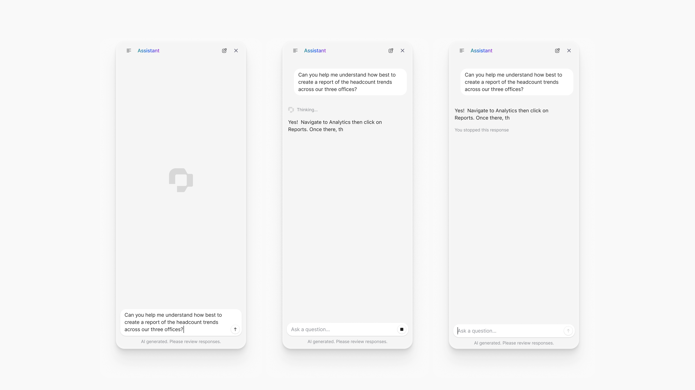
Problem: Assistant described actions but left users to navigate manually.
Solution: "Take action" button navigates directly to relevant screen.
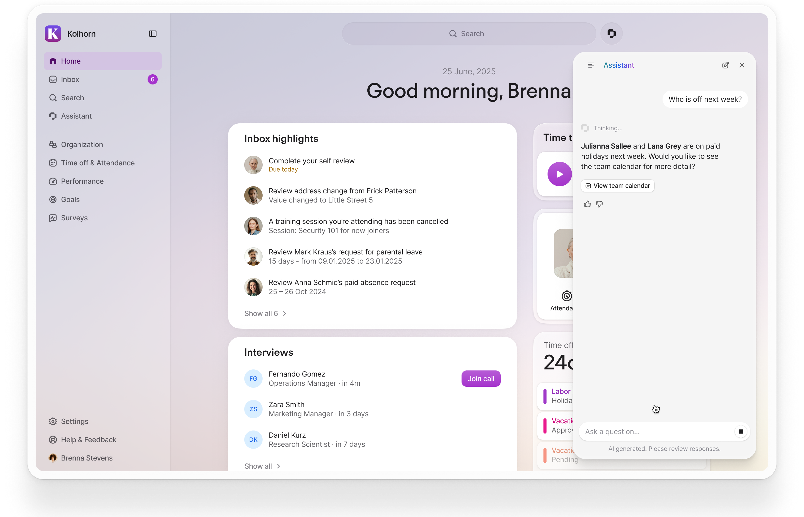
Problem: Generic errors, no timestamps, hard to share with support.
Solution: Descriptive explanations + timestamps + copy-to-clipboard.
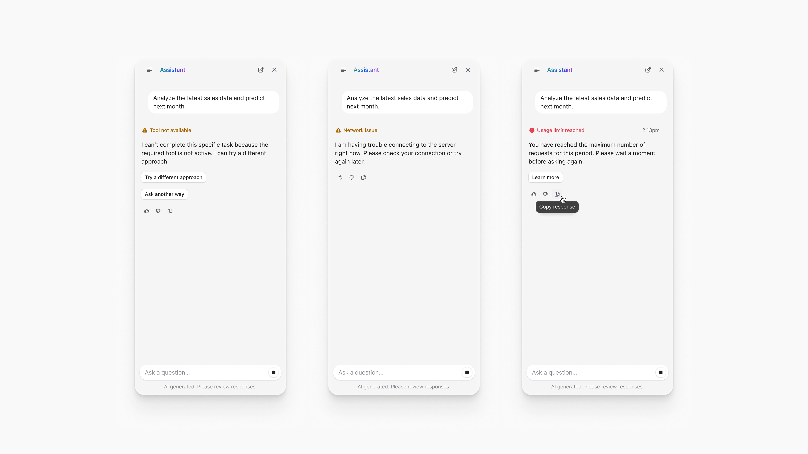
Detailed view of customer satisfaction improvements across the measurement period.
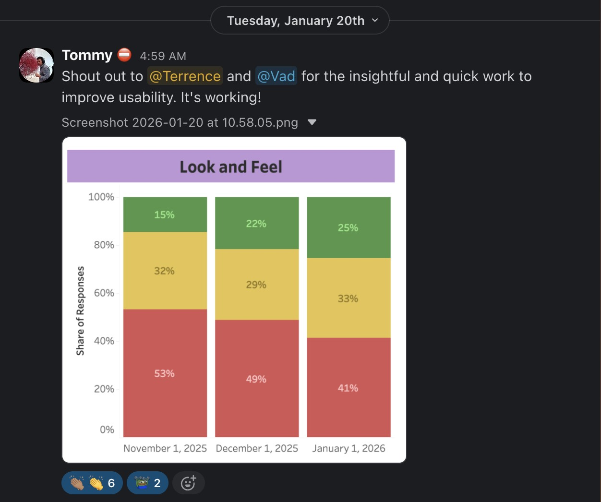
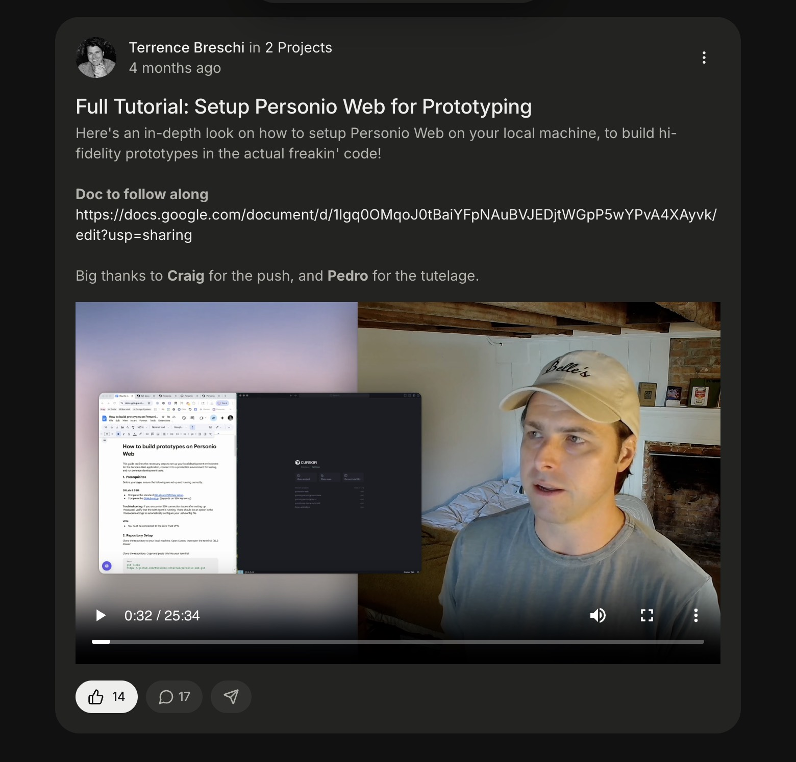
But they also taught me where the real problems lived.
Solving my own problems with development tools